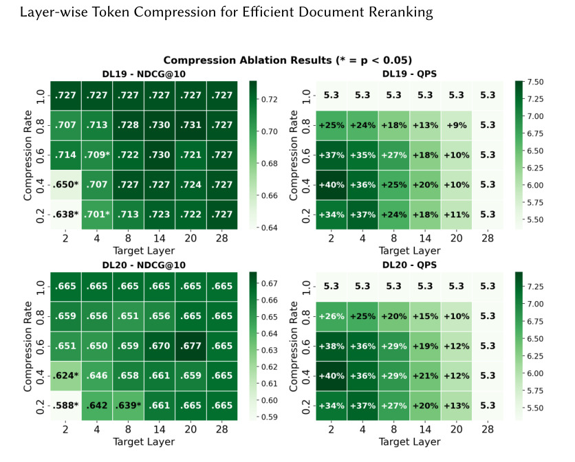
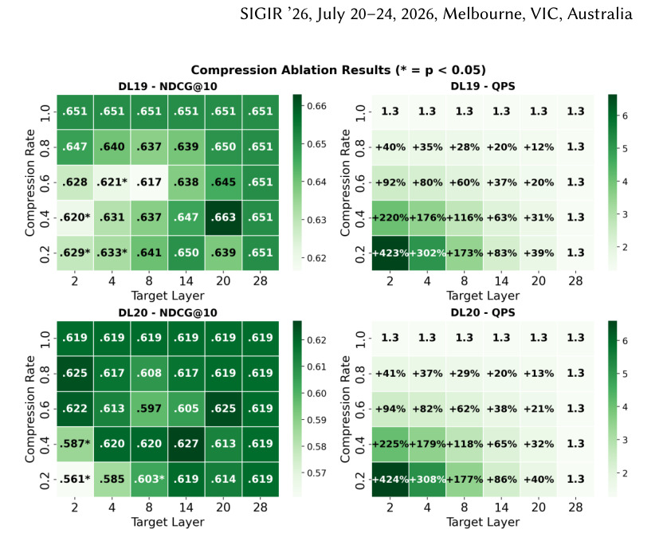
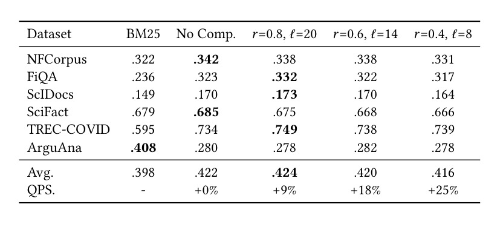
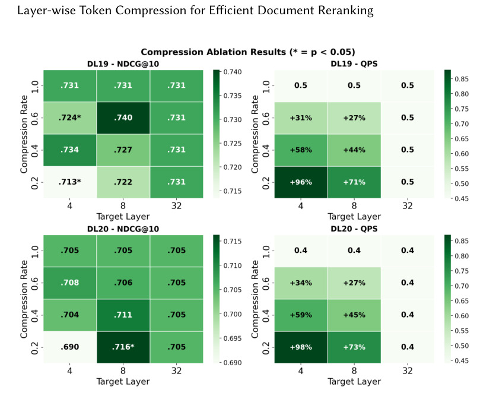

LTC：Layer-wise Token Compression for Efficient Document Reranking
这里精读一篇 2026-05-20 提交到 arXiv 的论文《Layer-wise Token Compression for Efficient Document Reranking》。中文可以叫《用于高效文档重排的逐层 Token 压缩》。
论文链接：arXiv:2605.20683
作者：Shengyao Zhuang, Zhichao Xu, Ivano Lauriola
机构/团队：Amazon AGI / Amazon AWS。
公开日期：2026-05-20，来源：arXiv cs.IR，arXiv ID：2605.20683。
代码/项目页：PDF 与 arXiv 页面本轮未核验到独立代码仓库。
0. 导读
LTC 关注的是搜索和推荐链路里非常核心的效率问题：cross-encoder reranker 效果好，但在长 query-document 序列上推理成本高。传统 token compression 常在 embedding 层把 token 分组聚合，减少后续 Transformer 层的序列长度。这对 bi-encoder retriever 有时有效，但作者观察到直接放到 cross-encoder reranker 上效果并不理想。原因很直观：cross-encoder 依赖 query 与 document token 在多层 attention 中逐步交互，过早压缩会破坏细粒度匹配信号。
论文提出 Layer-wise Token Compression，也就是不在输入层一开始就压，而是在中间层做 adaptive token pooling。这样模型先用若干层建立 query-document 交互，再压缩 token 降低后续计算。实验显示，在 MS MARCO passage/document ranking 上，中层压缩能保持排序质量，同时 passage ranking QPS 最高提升 25%，document ranking QPS 最高提升 116%。作者还把方法扩展到 listwise LLM reranker，说明长上下文重排也能受益。
这篇论文对推荐系统很有迁移价值。推荐/广告链路里的精排、重排、混排和搜索排序都面临相似问题：后段模型越强，候选越长，成本越高。LTC 的启发是，不要把压缩只当输入预处理，而要考虑模型内部不同层的语义成熟度，在合适层级做长度缩减。
1. 背景与问题
现代信息检索系统通常采用多阶段架构：第一阶段召回大量候选，第二阶段用更强模型重排。cross-encoder reranker 把 query 和 document 拼接输入同一个 Transformer，能建模 token-level 交互，效果通常优于 bi-encoder；代价是每个 query-document pair 都要跑完整 Transformer，候选多、文档长时成本高。
Token compression 是一种自然加速思路：把多个 token 聚合成少数表示，降低 attention 复杂度。问题在于压缩位置很关键。在 embedding 层压缩意味着模型还没看到 query-document 交互，就已经丢掉原始 token 细节。对于 retriever，文档和 query 可能本来就分别编码，早压缩影响较小；对于 reranker，排序信号往往来自局部词匹配、实体关系、否定词和上下文窗口，过早聚合会伤害质量。
LTC 的问题定义是：在不显著损失 nDCG@10 等排序质量的前提下，如何压缩 cross-encoder reranker 的 token 序列，提高 inference QPS。这里的“layer-wise”不是每层都压，而是选择目标层，在中间层应用 adaptive token pooling。模型前半段保留细粒度交互，后半段在较短序列上继续计算。
这个问题也映射到推荐重排。很多工业系统会在粗排后对几十到几百个候选做 cross attention 或 listwise reranking。若每个候选的多模态文本、评论、属性和用户上下文都很长，推理成本会成为瓶颈。LTC 提供了一种不改变整体任务定义的压缩路径。
2. 核心方法
LTC 的核心是 adaptive token pooling at intermediate transformer layers。给定一个 Transformer reranker，前若干层照常处理完整 query-document token 序列；到指定 target layer 时，对 token 表示做压缩，把有效 token 数降低到 compression rate 对应的长度；之后的层在压缩序列上运行。相比输入层压缩，中间层的 token 表示已经包含部分上下文交互，因此聚合损失更小。
论文的贡献之一是系统性比较压缩层和压缩率。不是所有层都适合压缩。太早压缩会伤害匹配；太晚压缩省不了多少计算。实验热图显示，中间层通常形成较好的质量/效率折中。这个观察很实用，因为它把压缩从“是否压”变成“在哪一层、压多少”的二维配置问题。
作者还区分了 trained LTC 和 zero-shot compression。trained LTC 在训练时加入压缩，使模型适应中间层 token pooling；zero-shot compression 则把压缩直接施加到未压缩训练的模型上。实验显示 trained LTC 更稳，zero-shot 在某些设置也有收益，但 aggressive compression 会伤害质量。这说明压缩算子虽然简单，训练时暴露给模型仍然重要。
更有意思的是 listwise LLM reranker 扩展。Listwise reranking 会把多个候选放进长上下文，让 LLM 排序或打分，序列更长、成本更高。LTC 不做跨文档压缩，而是在文档内部或层内降低 token 数，保留列表级比较结构。实验显示长文档 listwise 场景 QPS 改善更大，说明中间层压缩对长上下文重排尤其有价值。
3. 图表解读

图 1 是 pointwise passage ranking 的热图，左侧看 nDCG@10，右侧看 QPS。横纵维度对应 target layer 和 compression rate。它说明中层压缩可以在质量接近 baseline 的情况下提高吞吐；但过早或过强压缩会使 nDCG 下降。这个图支撑了 LTC 最重要的设计：压缩位置必须放在模型已经形成一定交互表示之后，而不是盲目在输入层聚合。

图 2 是 pointwise document ranking。相比 passage，document 更长，因此压缩带来的 QPS 提升更明显，摘要中提到最高可达 116%。这张图对工程更有吸引力，因为长文档重排通常是成本最难控制的部分。值得注意的是，质量热图并非所有高压缩点都安全，说明线上部署要为不同文档长度和 query 类型选择分桶策略。

表 1 是 zero-shot BEIR 评估，比较不同 LTC 配置在跨域数据集上的 nDCG@10。它回答的是泛化问题：MS MARCO 训练出的压缩 reranker 是否还能在 NFCorpus、FiQA、SciDocs、SciFact、TREC-COVID 等数据上工作。表格说明部分压缩配置不仅没有破坏跨域效果，甚至可能优于未压缩 baseline。作者解释为压缩可能起到 regularizer 作用，鼓励模型学习更长度不变的表示。

图 4 展示 listwise passage ranking 的 LTC 效果。Listwise LLM reranker 本身上下文更长，压缩带来的效率价值更高。这里要注意 listwise 排序的目标不同于 pointwise：模型需要比较多个候选之间的相对关系。LTC 若破坏候选内部细节或候选间对比，就会伤害排序。图中较好的质量/效率点说明中间层压缩没有简单抹掉 listwise 信号，但部署仍需按列表长度调参。
4. 实验与结果
论文在 MS MARCO passage 和 document ranking 上做主要实验，指标包括 nDCG@10 和 QPS。pointwise passage ranking 中，LTC 能在保持排序质量的同时最高提升 25% QPS；document ranking 中，因为输入更长，最高提升 116% QPS。作者还做了 zero-shot BEIR 评估和 listwise LLM reranking 扩展。
主结果说明训练时加入 LTC 的模型更稳。中间层压缩在多个压缩率下保持质量，而输入层或过早压缩不适合 cross-encoder。document ranking 的结果尤其值得关注：passage-trained reranker 迁移到长文档任务时，带压缩训练的模型有时优于未压缩模型，说明 LTC 不只是加速，也可能改善长度外推。
BEIR 结果说明泛化并未明显破坏。对检索系统来说，跨域泛化比单一 benchmark 更重要，因为线上 query 分布经常变。若压缩模型只在 MS MARCO 上保持效果、跨域崩掉，就很难部署。表 1 给出一定正面证据，但仍需更大规模工业数据验证。
Listwise 部分说明 LTC 可用于更接近 LLM 排序的场景。长上下文 listwise reranker 的成本往往随候选数和文档长度迅速增长，若能在中间层压缩，可能把 LLM reranking 从少量实验推进到更实用的服务层。不过论文仍主要看离线 QPS，端到端链路里的 batching、KV cache 和服务并发还需要单独评估。
5. 我的理解
我认为 LTC 的价值在于，它提醒我们“压缩时机”比“压缩算子”更重要。很多效率工作会提出复杂压缩模块，但如果位置选错，模型还没完成必要交互就丢信息。LTC 使用相对简单的 adaptive average pooling，却因为放在中间层而取得有效折中。这对推荐模型压缩也有启发：不要只在输入特征层降维，也可以在模型内部语义逐步成熟后压缩候选或 token。
这篇论文还说明 cross-encoder reranker 和 bi-encoder retriever 不能共享同一套效率直觉。Retriever 关注独立表示，早期压缩可能保留全局语义；reranker 关注 query-document 细粒度交互，早期压缩可能丢掉关键匹配。推荐系统中的粗排、精排也类似：召回模型可以接受更粗语义，重排模型需要保留局部差异。
可能被高估的地方是 QPS 提升与服务收益之间的距离。离线 QPS 提升不一定等于线上端到端延迟下降，因为重排服务还受候选数量、batching、特征读取、网络传输和缓存命中影响。若模型计算不是瓶颈，LTC 的收益会被稀释。反过来，在长文档或 listwise LLM 场景，计算确实是瓶颈，收益可能更明显。
我也关注压缩对可解释性的影响。Reranker 常需要定位 query-document 匹配证据，如果中间层压缩改变 token 对齐，解释或高亮可能变难。对于搜索结果摘要、广告合规和法律/医疗检索，压缩模型的证据追踪需要额外验证。
6. 工程启发与复现建议
复现 LTC 可以从一个 Qwen 或 BERT 类 cross-encoder reranker 开始，在 MS MARCO passage 上训练 baseline，再在中间层加入 pooling。实验矩阵至少包含 target layer、compression rate、是否训练时启用压缩三维。指标不要只看 nDCG@10，还要记录 QPS、GPU memory、不同文档长度分桶和 tail latency。
线上迁移时可以采用自适应策略。短文档或高价值 query 不压缩，长文档或低风险候选使用中等压缩；如果 query 包含精确实体、数字、否定词或合规敏感词，则降低压缩强度。这样比全局固定 compression rate 更安全。对于推荐重排，也可以按候选文本长度、用户请求复杂度和业务优先级调整压缩层。
如果用于 listwise LLM reranker，建议先限制候选数和文档长度，观察压缩是否改变排序稳定性。可以加入 pairwise consistency 检查：同一候选列表多次排序，压缩前后前 k 项重合度是否足够高。若压缩提升 QPS 但排序波动变大，线上 A/B 可能出现不可预测影响。
7. 局限与风险
- 实验主要基于 MS MARCO 和有限 BEIR 数据，工业多语言、多模态和广告文本场景仍需验证。
- 压缩超参需要校准。target layer 和 compression rate 选错会明显损害排序质量。
- 离线 QPS 不等于端到端收益。特征服务、网络、候选生成和 batching 可能成为真实瓶颈。
- 对精确匹配和证据定位任务有潜在风险。中间层压缩可能弱化少数关键 token 的影响。
- 与其他加速技术的组合未完全展开，例如量化、蒸馏、early exit、ANN cache 和 speculative reranking。
8. 后续跟进
- 跟进作者是否发布训练脚本和 listwise LLM reranker 配置，重点复现实验热图。
- 在中文搜索或推荐重排数据上验证 LTC，观察对短 query、长商品标题和多属性文本的影响。
- 比较 LTC 与 late interaction、ColBERT 压缩、蒸馏小 reranker 的成本/效果前沿。
- 研究自适应压缩策略：按文档长度、query 类型和业务风险动态选择 target layer 与 compression rate。